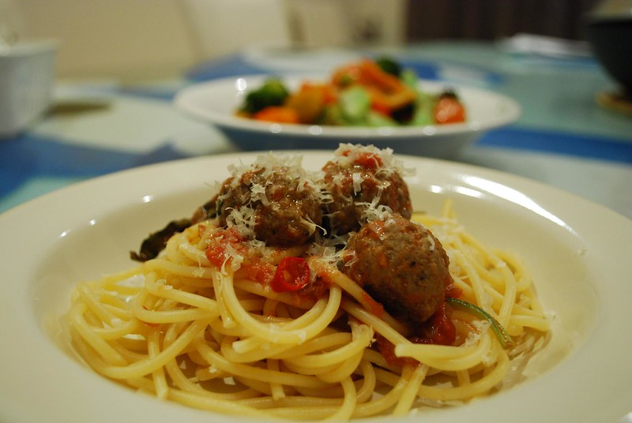

Spaghetti & Meatballs
Home

Classic Spaghetti & Meatballs
Tender homemade meatballs simmered in a rich tomato sauce, served over al dente
spaghetti for a comforting, timeless Italian-American favorite. Perfect for weeknight dinners and sure to please the whole family.
Recipe Details
- Prep Time: 15 minutes
- Cook Time: 30 minutes
- Total Time: 45 minutes
- Servings: 4
- Difficulty: Easy
Ingredients
- 1 lb spaghetti
- 1 lb ground beef
- 1 egg
- 2 gloves garlic, minced
- 1 bottle marinara sauce
- 1/2 tspn salt
- 1/4 tspn black pepper
- 6-8 cups water
- 1/4 cup grated Parmesan cheese
- 1/4 cup breadcrumbs
Preparation
Meatballs
- In a bowl, combine ground beef, breadcrumbs, Parmesan cheese, egg, minced garlic, salt & pepper
- Mix until just combined
- Roll mixture into 1-inch balls
- Heat oil into a large pan over medium-high heat
- Brown meatballs on all sides for 5-6 minutes
- Set aside on a plate
Marinara Sauce
- Pour Marinara sauce into the pan and heat for 2-3 minutes on medium-high heat
- Return meatballs into the pan
- Simmer meatballs on low heat for 10-15 minutes, stirring occasionally
- Taste and adjust seasoning as needed
Pasta
- Bring 6-8 cups of water to a boil on a large pot
- Add salt to water
- Add spaghetti and cook according to package instructions, usually 8-10 minutes
- Drain pasta in a colander and set aside
Serving
- Place cooked pasta on plates or bowls
- Top with meatballs & marinara sauce
- Garnish with extra Parmesan cheese
- Enjoy!